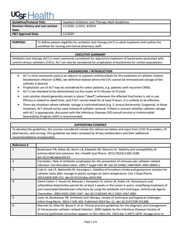

Hosted on idmp.ucsf.edu, no login. 4 pages, 327 KB
UCSF Medical Center Adult Inpatient Antibiotic Lock Therapy (ALT) Guidelines
Quick Links:
Patient Eligibility
ALT Offerings & Doses
Catheter & Volume Selection
Dwell Time & Exchange Frequency
Pharmacy Operations
Nursing Administration
Discharge Planning
Definitions
EXECUTIVE SUMMARY |
|---|
Antibiotic lock therapy (ALT) is most commonly considered for adjunctive treatment of bacteremia associated with central venous catheters (CVCs). ALT can also be considered for prophylaxis of bacteremia for certain populations. |
BACKGROUND / INTRODUCTION |
|---|
ALT is most commonly used as an adjunct to systemic antimicrobials for the treatment of catheter-related bloodstream infection (CRBSI, see definition below) where the CVC cannot be removed and salvage of the catheter is desired. Prophylactic use of ALT may be considered for select patients, e.g. patients with recurrent CRBSI. ALT is not intended to be administered via the routes of IV infusion or IV push. Lock solution should generally remain in place (“dwell”) whenever the affected line/lumen is not in use. Efficacy is related to dwell time, and if ALT cannot dwell for at least 4 hours, it is unlikely to be effective. There are situations where catheter salvage is contraindicated (e.g. S. aureus bacteremia, fungemia); in these situations, ALT should not be used instead of catheter removal. If there is concern whether catheter salvage with ALT is appropriate, discussion with the Infectious Diseases (ID) consult service or Antimicrobial Stewardship Program (ASP) is recommended. |
SUPPORTING EVIDENCE |
|---|
To develop the guidelines, the sources considered include the references below and input from UCSF ID providers, ID pharmacists, and nursing. This guideline has been reviewed by all key collaborators and their additional recommendations incorporated. |
PATIENT ELIGIBILITY
-
Catheter related bloodstream infection (CRBSI) of a permanent tunneled or surgically implanted central venous catheter
-
Prophylaxis for recurrent CRBSIs in high-risk patients
-
ID consult or ASP approval is recommended.
CONTRAINDICATIONS
-
History of heparin-induced thrombocytopenia (HIT) for ALT-containing heparin. Gentamicin lock is an exception as it does not contain heparin.
-
Allergy to any component of the lock.
-
Personal or religious exclusion to ingestion of pork components if lock contains heparin. Gentamicin lock is an exception as it does not contain heparin.
-
Resistance to ALT antibiotic demonstrated via antibiotic susceptibility testing.
-
Catheter tunnel or exit site infection.
-
Relative contraindication: Peripherally inserted central catheter or other non-tunneled CVCs, where line removal may be preferred (discuss use with ID/ASP if removal is not feasible).
ALT DOSES
-
See table below
-
Other antibiotic locks may be considered per ID/ASP as needed
-
Drug shortages may affect the availability of lock therapy
Antibiotic | Antibiotic Concentration (mg/mL) | Anticoagulant Concentration | Diluent | Expiration* |
|---|---|---|---|---|
Cefazolin | 10 mg/mL | Heparin 10 units/mL | 0.9% NaCl | 72 hours |
Ceftazidime | 10 mg/mL | Heparin 10 units/mL | 0.9% NaCl | 72 hours |
Gentamicin | 2.5 mg/mL | Sodium Citrate 40 mg/mL (4%) | N/A | 72 hours |
Linezolid | 1 mg/mL | Heparin 10 units/mL | 0.9% NaCl | 72 hours |
Vancomycin | 2 mg/mL | Heparin 10 units/mL | 0.9% NaCl | 72 hours |
Daptomycin | 5 mg/mL | Heparin 10 units/mL | Lactated Ringers | 72 hours |
*Expiration reflects the time before which the ALT dwell must be completed
Catheter and Volume Selection
Catheter Type | Volume per Lumen |
|---|---|
Tunneled Central Catheter (e.g. Broviac, Hickman, Groshong, etc), tunneled hemodialysis (HD) catheters | 2 mL |
Implanted Vascular Access Port (e.g. Port-A-Cath) | 5 mL |
Dwell Time and Exchange Frequency
Non-HD tunneled central catheters:
-
Duration of dwell time should not exceed 24 hours. Lock solution should generally remain in place (dwelling) as long as possible, whenever the affected line/lumen is not in use (minimum dwell time is 4 hours). The number of ALT exchanges per day (e.g. order frequency: q24h, q12h, q8h, etc) should be coordinated between pharmacy and the RN. Perform ALT exchange of unused lumens at least daily, clustered with lumen patency assessment and flushing (i.e., aspirate and discard old lock, flush with NS, instill new lock).
-
Pharmacy and nursing should work to cluster required medications, lab draws, and/or blood products to minimize catheter use and maximize ALT dwell times.
-
ALT should be instilled into all lumens of multi-lumen catheters, and each lumen should have a separate order in APeX. If concurrent dwelling is not feasible, consider alternating lumens that are in use vs. locked with ALT.
HD catheters:
- ALT solution should dwell until the next HD session. ALT solution should be aspirated prior to dialysis. A new lock should be placed in each lumen after dialysis. Lock solution should generally remain in place (dwelling) whenever the affected line/lumen is not in use.
- ALT should be instilled into all lumens of multi-lumen catheters, and each lumen should have a separate order in APeX.
PHARMACY OPERATIONS
-
Pharmacy to begin preparation when either:
-
Hemodialysis RN requests ALT upon patient arrival in dialysis (HD catheters only), OR
-
ALT dispense automatically triggered at time/frequency specified in the ALT order (non-HD catheters only)
Pharmacy to send 2 mL of antibiotic lock solution in a 10 mL syringe for each lumen of a tunneled catheter.
Pharmacy to send 5 mL of antibiotic lock solution in a 10 mL syringe for each lumen of an implanted vascular access port (e.g. Port-A-Cath). -
Storage: Room temperature (23-25˚C).
-
Label warnings: For antibiotic lock therapy into CVC lumen only.
NURSING ADMINISTRATION
-
ALT for HD catheters should be requested by hemodialysis RNs upon patient arrival in the dialysis unit.
-
ALT for non-HD catheters will be prepared and dispensed at the time/frequency specified in the ALT order (e.g every 24 hours, etc).
-
To place antibiotic lock therapy:
Inspect ALT for precipitation. If precipitation is noted, discard syringe and contact pharmacy to re-make the product.
If ALT already in place, aspirate and discard volume of ALT plus 1-2 mL.
Flush with 10mL NS syringe.
Instill ALT solution.
Clamp catheter and allow antibiotic lock to dwell as long as possible.
Label ALT locked lumen: “DO NOT USE- Antibiotic Lock In Place”
Specify lumen in eMAR and document ALT in IV Assessments flowsheet “Lumen Status” row. -
When dwell time is complete, aspirate and discard volume of ALT plus 1-2 mL.
DISCHARGE PLANNING
-
Home infusion companies may not offer antibiotic locks, or may offer antibiotic locks that differ from those available inpatient at UCSF Health.
-
Please confirm availability and adjust therapy plan as appropriate prior to discharge.
DEFINITIONS
-
Catheter-related bloodstream infection (CRBSI): bacteremia or fungemia in a patient who has an intravascular device, a positive peripheral blood culture, clinical manifestations of infection (e.g. fever, chills, and/or hypotension), and no apparent source for bloodstream infection other than the catheter. At UCSF, diagnosis is by differential time to positivity (DTTP), where growth in a culture drawn from the catheter is detected by an automated blood culture system two hours earlier than a simultaneously collected peripheral blood culture.
-
Exit site infection: erythema, induration, or tenderness within 2 cm of catheter exit site, with or without microbiological growth of an organism from exudate from the site. A contraindication to catheter salvage.
-
Tunnel infection: tenderness, erythema, or induration extending beyond 2 cm from the catheter exit site involving the subcutaneous tract of a tunneled line. A contraindication to catheter salvage.
Guideline/Protocol Title: | Inpatient Antibiotic Lock Therapy Adult Guidelines |
|---|---|
Revision History and Last revision Date: | 12/2020, 1/2023, 8/2024 |
P&T Approval Date: | 11/2024 |
Reference # | |
|---|---|
1 | Bookstaver PB, Rokas KE, Norris LB, Edwards JM, Sherertz RJ. Stability and compatibility of antimicrobial lock solutions. Am J Health Syst Pharm. 2013;70(24):2185-2198. doi:10.2146/ajhp120119 |
2 | Carratalà J. Role of antibiotic prophylaxis for the prevention of intravascular catheter-related infection. Clin Microbiol Infect. 2001;7 Suppl 4:83-90. doi:10.1046/j.1469-0691.2001.00062.x |
3 | Cote D, Lok CE, Battistella M, Vercaigne L. Stability of trisodium citrate and gentamicin solution for catheter locks after storage in plastic syringes at room temperature. Can J Hosp Pharm. 2010;63(4):304-311. doi:10.4212/cjhp.v63i4.934 |
4 | Haimi-Cohen Y, Husain N, Meenan J, Karayalcin G, Lehrer M, Rubin LG. Vancomycin and ceftazidime bioactivities persist for at least 2 weeks in the lumen in ports: simplifying treatment of port-associated bloodstream infections by using the antibiotic lock technique. Antimicrob Agents Chemother. 2001;45(5):1565-1567. doi:10.1128/AAC.45.5.1565-1567.2001 |
5 | Justo JA, Bookstaver PB. Antibiotic lock therapy: review of technique and logistical challenges. Infect Drug Resist. 2014;7:343-363. Published 2014 Dec 12. doi:10.2147/IDR.S51388 |
6 | Mermel LA, Allon M, Bouza E, et al. Clinical practice guidelines for the diagnosis and management of intravascular catheter-related infection: 2009 Update by the Infectious Diseases Society of America [published correction appears in Clin Infect Dis. 2010 Apr 1;50(7):1079. Dosage error in article text] [published correction appears in Clin Infect Dis. 2010 Feb 1;50(3):457]. Clin Infect Dis. 2009;49(1):1-45. doi:10.1086/599376 |
7 | O'Grady NP, Alexander M, Burns LA, et al. Guidelines for the prevention of intravascular catheter-related infections. Clin Infect Dis. 2011;52(9):e162-e193. doi:10.1093/cid/cir257 |
8 | Yokoyama H, Aoyama T, Matsuyama T, et al. Yakugaku Zasshi. 1998;118(12):581-588. doi:10.1248/yakushi1947.118.12_581 |
Contributing Author(s): | 2024 Revision: Prepared by: Sam Andrews, PharmD & Emily Kaip, PharmD Reviewed by: Adult Antimicrobial Stewardship: Ripal Jariwala, PharmD & Will Simmons, MD Clinical Nurse Specialist: Vivian Huang, MS, RN, CNS, BMTCN, OCN Advanced Practice Clinical Manager: Melissa Lee, MS, RN, PCCN, GCNS-BC 2020 Revision: Antimicrobial Stewardship Program Lead Pharmacist(s): Steve Grapentine PharmD, BCPS, APP & Alex Hilts-Horeczko PharmD Antimicrobial Stewardship Program Medical Director: Sarah Doernberg MD, MAS Clinical Content Advisor: Kathy Yang PharmD, MPH Clinical Nurse Specialist: Laura Griffith RN, MSN, AOCNS Nursing Informatics: Craig Johnson RN-BC, MSN, FNP Pharmacy Student: Sharon Xu Doctor of Pharmacy Candidate, 2021 |
|---|---|
Contact Person: | Adult Antimicrobial Stewardship Program |
Approving committee(s): | Pharmacy & Therapeutics (11/2024) Antimicrobial Subcommittee (11/18/24) |
Revision History | |
|---|---|
Revision Date | Update(s) |
12/2020 | Initial guideline developed, approved by P&T |
1/2023 | Minor revision in verbiage |
8/2024 | Re-formatted guideline into updated guideline format. Updated stability/expiration information to 72h for all locks to account for entire interdialytic period. Added information on diluent used for each lock. Added daptomycin + heparin lock offering. Provided specific directions for how to manage HD vs. non-HD catheters. Minor revisions in verbiage in “Pharmacy Operations” and “Nursing Administration” sections to enhance clarity, including enhanced guidance on managing multiple lumens, dwell time, etc. Added transitions of care considerations. Introduced catheter related bloodstream infection (CRBSI) terminology Updated references as appropriate. Removed ALT recipes from guideline (Master Formula Records to be stored in Focal Pointe). |